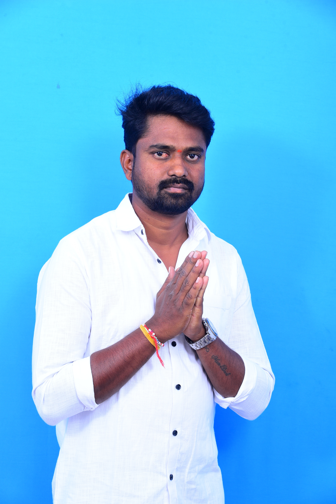
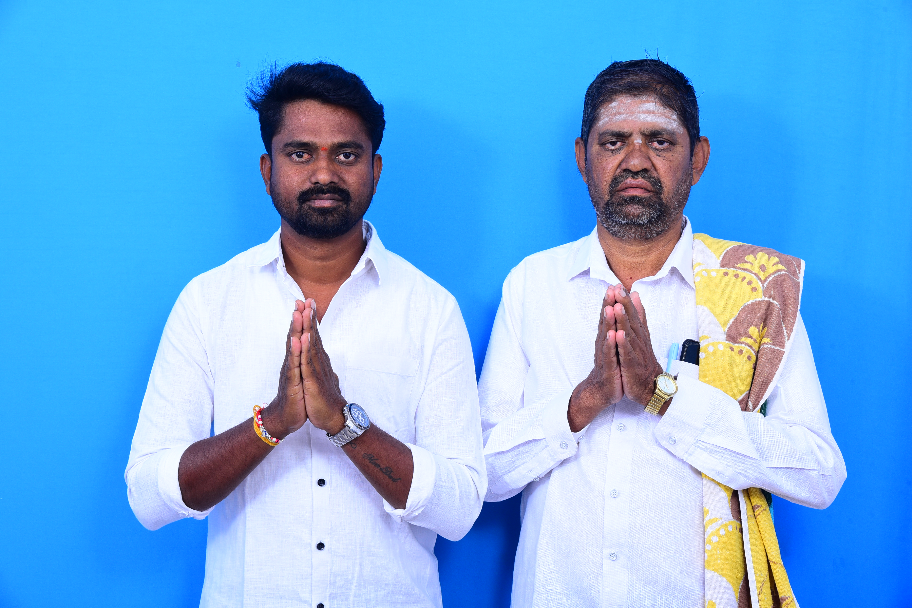
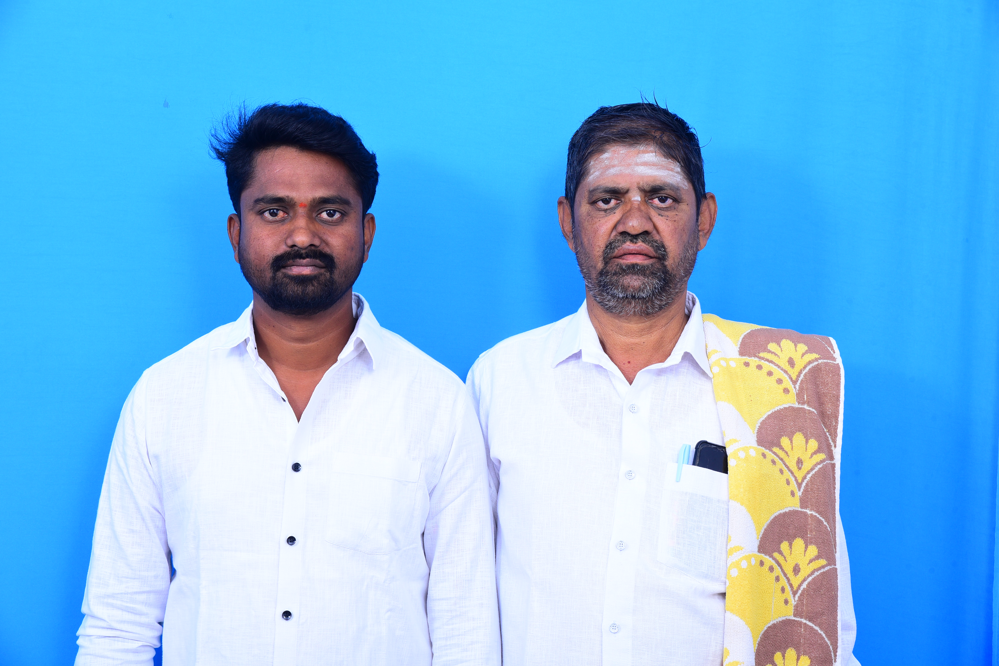

ఏ రాజకీయ పార్టీకి అతీతంగా — ప్రజల సేవ, పారదర్శకత మరియు మోధ గ్రామ పంచాయతీ సమగ్రాభివృద్ధే లక్ష్యంగా పనిచేస్తున్నాను.
మోధ గ్రామ పంచాయతీ సర్పంచ్ స్వతంత్ర అభ్యర్థి సాయిప్రసాద్ గ్రామ పంచాయతీ అభివృద్ధికి కట్టుబడి ఉన్న స్వతంత్ర ప్రజా సేవకుడు. పార్టీలకతీతంగా ప్రతి కుటుంబానికి ప్రభుత్వ పథకాలు, మౌలిక సదుపాయాలు అందేలా నిరంతరం ప్రజలకు అందుబాటులో ఉంటూ, ఆదర్శ గ్రామ నిర్మాణం కోసం కృషి చేస్తున్నారు.
యువత కోసం క్రీడా మైదానం ఏర్పాటు, మైదాన శుభ్రత పనులు, స్పోర్ట్స్ కిట్ల పంపిణీ మరియు క్రీడా టోర్నమెంట్లకు పూర్తి స్థాయి సహకారం.
మొహర్రం పండుగ మరియు ఇతర కార్యక్రమాల నిర్వహణ కోసం శాశ్వత షెడ్డు నిర్మాణం మరియు అవసరమైన మౌలిక సదుపాయాల కల్పన.
మోదా గ్రామ ప్రధాన ద్వారం వద్ద సుందరమైన ఆర్చ్ నిర్మాణం మరియు గ్రామ పంచాయతీ పరిధిలోని దేవాలయాల అభివృద్ధి పనులు.
పాఠశాల బాలికల భద్రతకు ప్రత్యేక చర్యలు మరియు పాఠశాల జోన్, బస్టాండ్, ప్రధాన ప్రవేశ ద్వారాల వద్ద సీసీ కెమెరాల ఏర్పాటు.
గ్రామంలో నిరంతర పారిశుధ్య నిర్వహణ, పరిశుభ్రత మరియు పచ్చదనం కోసం విరివిగా మొక్కలు నాటడం, వాటి సంరక్షణ.
అర్హులైన ప్రతి ఒక్కరికీ పింఛన్లు, ఇళ్లు, రేషన్, రైతు సంక్షేమ పథకాల విషయంలో పూర్తి సహాయ సహకారాలు.


గ్రామ సమస్యలు, వినతులు లేదా సహాయం కోసం నేరుగా సంప్రదించగలరు.